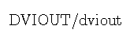
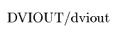
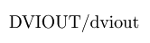

May, 2021
目次
0. 序
1. dvioutの基本
2. 各種のDVIwareやワープロ
3. gray scale
4. 文字の色づけ - その１ -
5. 文字の色づけ - その２ -
6. 文字の重なり
7. 画像データの取り込み
8. 文字や画像の回転
白黒画像とカラー画像
カラーPostScript画像の回転
BMC画像ファイル
9. 斜線やtpicによる描画
10. プリンタとの関わり
10.1. Windows専用プリンタ
プリンタドライバのチェック
10.2. PostScriptプリンタ
10.3. カラー画像の白黒印刷
11. 画像出力
11.1. 矩形領域の指定
11.2. BMP/BMC画像出力
11.3. EMF画像出力
11.4. PNG/EPS等の画像出力
11.5. PDF画像出力
11.6. PostScript画像出力
11.7. PDF変換
11.8. 上記以外の画像ファイルへの切り出し
11.9. FAX送信
12. dviprt機能
12.1. LBP用ドライバ
12.2. 他のプリンタドライバの制御
13. BMC画像の圧縮率
dvioutが如何にして preview 画面（=
画像）を作成しているか、ということを解説します。
それとともに、On-line Help のみでは解説が不十分と思われる
Option → Setup Parameters ... → [Graphic] の
cmode: auto mode(p2), merge, replace(def), replace(bak), patch, patch2, auto
mode(rep)
GIF: raw PBM, monochrome BMP, BMP(16 colors), BMP(256 colors), BMP(full
color)
gfit: ON/OFF
gow: ON/OFF
gclip: ON/OFF
の説明をします。
他の WinDvi や lips3dvi などとのDVIwareとの原理的な違い、あるいは
PostScript printer を使うとき、どうして auto mode(rep) が良いか、Windows用のカラーインクジェットプリンタを
使うときは、どうすれば高速に印刷できるか、など、プリンタとcmodeとの関係の解説もあります。
DVIファイルはページ毎に独立に書かれており、何番（例えば２番）のフォントの何番 （例えば65番）のコードの文字を、そのページのどの位置（reference point）に配置せよ、という 命令のほか、中が詰まった矩形を縦横のサイズを指定して指定した場所に描け、という命令などか ら成っています。後者は、例えば罫線を引く場合に、線の太さと長さと引く位置を指定することに なります。
全てのページ内容を記述したDVIファイルの最後には、そのDVIファイルで使われるフォントの情報が書 いてあります。例えば、２番のフォントはcmr10（Compuer Modern Roman 10pt）を12ptのサイズで用いる、というような情報が書かれています。
フォントの番号はdvioutの Help → Font Info. で表示されるもので、DVIファイルで便宜的に決められるものですが、文字のコード番号は、フォントに応じて決まっているものです（例えば、cmr10 の65番の文字は「A」にあたります）。
dvioutなどのDVIwareは、各フォントの使われる文字の画像データを得て、それを張り付けていくことにより、１ページの紙面の画像データを作成します。最も普通に使われるフォントの画像データは、PKフォント と呼ばれる形式で、各文字の画像データが独自の方法で圧縮されて文字毎に収録 されています。 文字の画像データは、実際の文字の部分を囲む最小の矩形（Bounding Box） で切りつめられており、指定位置（reference point）から見てBounding Box をどこに配置すべきかの相対位置、次の文字との標準の空き、などの情報（これらは解像度と独立なデータ）も画像データ（これは解像度に依るデータ）と共に入っています。
通常の横書きでは、reference point は文字下部の基準線の左端に位置します。例えば「A」では ほぼ文字の最左下点ですが、「g」などでは、文字は基準線の下にもはみ出ています。また、「’」では Bounding Box は「A」の場合より小さく、Bounding Box をreference point から見て上の位置に配置 することになります。
解像度が600dpi（600 dots/1 inch）でcmr10を12ptに拡大して使う場合のPKフォントは、通常 cmr10.720pk という名前のファイルになっています。cmr10 という 10pt のフォントを12ptのサイズで 使うため、720 = 600 x 12/10 という数がファイル名に入っています。標準の10ptで使う場合のPKフォン トのファイル名は、cmr10.600pk となります。
dviout は、DVIファイルを解釈して、指定したページの紙面の画像データを作成します。具体的にはPKフォ ントから黒で描かれた文字の画像（Bounding Boxの大きさの矩形上に白の背景に黒で一つの文字が描かれた切手のようなものを想像すればよい） を得て、空白（白とみなして良い）の紙面に張り付けていく、 と考えればよいでしょう。そのほか、指定された矩形の部分を黒で塗りつぶすことも行います。
このようにして紙面の画像データが完成すると、それをディスプレイ画面で表示したり、プリンタに出力することになります。これがdviout（あるいは多くのDVIware）の基本的な仕組みです。 なお、WindowsではBMP画像形式（あるヘッダ付きの無圧縮画像データ）が用いられますので、dvioutもこの形式で紙面の画像データを作成します。
元来のTeXの場合、紙面作成にはこの２つしか存在しません。カラー画像を張り付けたり、文字に色づけするのは、TeXの special という拡張したコマンドを使ってなされ、元来のTeXの仕様には定義されていません （従ってこれは個々のDVIwareに依存する仕様になる）。 これについては、後から述べます。
WindowsのTrueTypeフォントなどの場合も、WindowsのSystemから必要な文字の画像データを得ることにより、PKフォントと同様に考えることが出来ます。
dviout は、紙面の画像データを作成することが基本ですが、単なる一つの画像データを受け付ける出力デバイスは多い上、そのコマンドは単純であるため、各種出力デバイスに対応することが出来ます。一方、ある出力デバイスに特化したDVIwareについては、別のやり方が可能です。
かつてよく使われた lip3dvi（Canon の LBP 用の DVIware）では、DVIファイルで使われる PKフォントの画像データをあらかじめLBPにダウンロードしておき、DVIを読んで、ページの開始・終了や、あるフォントのある文字をある位置に置け、という命令があると、それをプリンタ制御コマンド(LIPS III）の対応する命令に翻訳し、翻訳したその命令をプリンタに送ります。したがって、紙面の画像作成はプリンタ側で行われることになります。指定し た矩形を黒く塗りつぶす場合も同様です。
なお、dviout での印刷においても dviprt機能を使えば、このような方法で印刷をすることができます。
このやり方は、他のDVIwareでも使われることがあり、たとえばインプレスのWinDviでは、基本的には MS Windowsに登録されたTrueTypeフォントを用い、「紙面のどの位置にどのフォントのどの文字をどのサイズで置け」という命令をWindowsのシステムに送ることにより、 Windows側で文字の画像データを作成して紙面に張り付けて紙面を完成させ、画面に出したりプリンタに出力したりします。すなわち、WinDvi は文字の画像データを扱わないのが基本となっています。
dviout ではpatch2というモード（cmode）やデフォルトの印刷方式（auto mode (p2)）がこれにあたります。
Wordや一太郎などのMS Windowsのワープロも、上記と同様な方法が用いられており、それは紙面作成のためのデータからMS Windowsの紙面作成コマンドへの翻訳機と見なすことができます。一方、 dviout では、「文字の画像データという沢山の画像データを合成して一つの紙面の画像データを作成する」 という画像処理の要素が多分に入ることになります。
dvipskなどのDVIwareは、DVIの紙面作成命令をPostScript言語に翻訳するものであり、その後の紙面の画像データ作成は、PostScriptプリンタやGhostscriptによってなされます。
DVIwareにおいて、ディスプレイ画面に出力を行うpreviewerは印刷の場合とは異なった側面が あります。すなわち、高速に動作することと、低い解像度でそれなりに美しく表示することです。 後者のために、gray scale という手法が用いられます。
印刷では 600 dpi (600 dots/ 1 inch） というのは普通ですが、ディスプレイの解像度はずっとそれより低いので、 600 dpi 用に作成された画像データでは、紙面が大きく拡大され、その一部のみが表示されることに なります。150 dpi 程度に解像度を落とさないと、紙面全体を見ることが出来ません。このとき 600 dpi の白黒の画像データを 150 dpi の gray scale 画像に変換することができます。
●○○○ ●●○○ ●●●○ → ◎ 黒が 9/16 で 明るさは 7/16(c=1), 4/16(c=0.5 でのγ補正) ●●●○
150 dpi の 1 dot は、600 dpi の 4 x 4 = 16 dots の部分に対応します。白を1、黒を0という数字 で表し、その中間の灰色を明るさを 0 と 1 の間の数字で表すことにします。「150 dpi の縮小画像の、ある 1 dot に対応する 600 dpi の画像の 16 dots のうち n dots が黒（文字や線の部分） に対応していた場合、150 dpi のその 1 dot を (1 - n/16) の明るさの灰色にする」というような 手法で 150 dpiのgray scale画像が得られます。
たとえば、1 inch x 1 inch の白黒2値の画像は、600 dpi では 600 x 600 dots のサイズですが、150 dpi の gray scale に変換すると 150 x 150 dots のサイズになります。
その際に、若干調整をして、正数 c を用いて (1 - (n/16)c) の明るさにしています。これは γ補正と呼ばれます。c = 1 のときが補正無しで、c が 0 に近くなるほど、文字の周りが黒くなります（dviout の [Display] の contrast では high と表現されています）。
dviout では、c が 0.01 から 6.00 の範囲で調整でき、デフォルトは 0.80 としてあります。これは、 ディスプレイや好みに応じて見やすいように調整するのが良いでしょう。また、dviout では、gray scale での白から黒までは、γ補正に応じた16 段階に固定しており（600 dpi → 100 dpi でも同じ）、 このときdvioutで作成される画像データは 16色（色は白から黒までの16段階で、γ補正に従って パレットで指定）のカラーBMP画像となります。このgray scaleのBMP画像をMS Windowsを通じてディプレイ 画面に表示します。

上は、BaKoMaのCM TrueTypeフォントをLaTeXの \Large で用いた場合（cmr12が使われます）のdvioutの100 dpi での表示からの画像コピーで、順にgray scale無し、そのあとは 200 dpi, 300 dpi, 600 dpi からのgray scale です。
このdviout の gray scale 機能は、MS-DOS版のdvioutが一部Display Card用に対応していたことが元になっています。
一文字の画像を紙面に置く、ということをWindowsなどのSystemに任せているDVIwareの場合は、 あらかじめ gray scale に変換された文字の画像データを張り付けます、あるいは、Windows の TrueType フォントの場合では、gray scale によって文字を置くというSystemの機能を用いる こともできます。
高解像度のディスプレイではあまり差は明らかではありませんが、以下の違いがあります。
dviout では、HyperTeXにおけるホットスポットにあたる文字や、文字列検索で見つかった文字に対し、 色づけ表示やアンンダーラインを付加することができます。特に前者は、Windows版のdvioutを作成する動機に なったものなので、dviout for Windowsの基本設計段階で組み込まれています。
この色づけの文字やアンダーラインなどは、graphics package などによる文字の色づけと違って、previewのみに関係し、色を付けたり消したりが容易に出来る必要がある一方、色数は多い必要がありません。またpreview での gray scale に応じて、色づけした文字にも同様な処理が望まれます（カラーの時は、anti-aliasing と言います）。
基本的な8色、それに対する2種類16段階の anti-aliasing用ということで、2・8・16 = 256 のカラーパレットを用意し、256色BMP画像として表示画面を作成することで対応しています。2種類というのはnormal背景と色づけ背景で、例えば、赤を指定した場合、 normal背景では 文字色赤と背景色白の間をγ補正を考慮して16段階の色とし、 色づけ背景では、文字色黒と背景色赤の間のanti-aliasingとします。 なお、graphics packageのcolor.styなどによって背景色を指定 した場合、その背景色と文字色との間でanti-aliasingを行います。
dviout では、たとえば 600 dpi の紙面の画像（背景は白、文字は黒の2色画像）を用意し、 その際、HyperTeXのホットスポットなどのために色づけすべきBondingBoxの紙面での位置をすべて記憶しておきます。次にたとえば、150 dpiに縮小し、 16段階のgray scaleにした上記 256色BMPに変換します。 その後、色づけすべきBoundingBoxに属する dots のすべての色を変更します。
赤の文字の場合、黒から白までの 16 段階の gray scale が、赤から白までの 16段階のanti-aliasing に変更され、紙面は白のままで、文字はanti-aliasing処理がなされた赤の文字となります。具体的には、カラーパレットを表す8ビットのうち、色を表す3ビットを変更することになります（残りの5ビットのうち、4ビットが gray scale に、1ビットが反転背景かどうかに対応）。
アンダーラインや箱で囲む場合は、その線に対応するdotに 対し、反転背景色と文字色とのanti-aliaslingを逆にしたものに変更します（元が復元可能、すな わち、可逆な操作にするためこうなっています。青で線を引くと文字と重なった部分は黒にな ります。よって、文字の色づけとアンダラインの同時指定の場合の処理は、より複雑です）。
色づけされる文字のBoundingBoxの中に、色づけされない文字が入っていた場合は、そちらの文字も色づけされてしまうことになりますが、使われる目的から言って大きな支障はないと考えています。
なお、WinDvi のような形式（dviout でのpatch2のモード）におけるWindowsのTrueTypeフォントの文字出力は、WindowsのSystemが行うので、その際に文字色指定をするだけで、上記と比べて極めて簡単に色づけが実現されます。次項の文字の色づけも区別が無く同様です。
LaTeX2eのgraphics packageのcolor specialなどで、文字に色を付けた場合を考えましょう。 このときは、previewにおいても印刷においても指定した色で正確に出力することが望まれます。 一方、フルカラー(24bits)で600dpiのA4サイズの紙面に必要なBMPファイルのサイズは約100M byte のサイズとなり、処理を快適に行うにおいて現実的なサイズを超えており、WindowsのSystem が扱う場合にも様々な支障が生じてしまいます。そこで、以下のような方法を取ります。
一文字毎に画像ファイルを（文字色と背景色の）2色BMP形式で作成し、印刷の時は紙面全体の画像に色づけされた一文字の画像を順に張り付けてから出力する操作をWindowsのSystemの関数を通じて行います。dvioutのワークエリア上には、紙面全体の大きなBMP画像の他、色づけ文字の小さな2色BMP画像を複数保持することになります。
画面表示も同様ですが、anti-aliasingの処理が入ります。すなわち、一文字の2色BMP画像はサイズを縮めてanti-aliasingを行った16色BMP画像に変換しておき、それを印刷の時と同様
WindowsのSystemの関数を通じて、紙面と合成して出力します。このときの
anti-aliasing を文字色と背景色で行うか、あるいは（graphics package
に従って、dviout内部での色指定は色の push/pop を使います）
その一つ前の色のスタックで定義されている色（それが無ければ背景色）で行うかを選択できます
（cmode のreplace(def) とreplace(bak)）。但し、前者でも文字色が白の場合は、
背景色は黒とみなします。
dvioutでの１ページの紙面にあたるBMP画像作成は、黒で一文字が描かれた切手のようなものを白い紙面に貼っていく、というような操作である、と述べました。 このとき、「切手」が重なりなく貼られていけば問題ありませんが、重なりが生じたときに問題が生じます。 透明な紙に黒で文字が描かれた「切手」ならば良いでしょうが、BMP画像には「透明色」というものは存在しません。
欧文タイプライタで「￥」の文字を、「Ｙ」と「＝」との重ね打ちで作る、ということがありましたがTeXでもこのようなことはよく行われます（たとえば、\sqrt[n]{2} や AMSフォントを使わない場合の \hvar で重なりが生じます）。画像データは、それぞれ
●○○○○○● ●○○○○○● ○●○○○●○ ○●○○○●○ ○○●○●○○ ○○●○●○○ ○○○●○○○ ○○○●○○○ ○●●●●●○ ○○○●○○○ ●●●●● ○○○●○○○ ○○○●○○○ ○○○○○ ○●●●●●○ ○○○●○○○ ●●●●● ○○○●○○○ ○○○●○○○ ○○○●○○○ ○○○●○○○
であるとします。
| AND | OR | XOR | |
|---|---|---|---|
| (1,1) | 1 | 1 | 0 |
| (1,0) | 0 | 1 | 1 |
| (0,1) | 0 | 1 | 1 |
| (0,0) | 0 | 0 | 0 |
白黒２色の時、白と黒をそれぞれ１と０で表し、画像は１と０とを並べて表すとします。上の図では、○が１に●が０にあたります。画像の合成は、この１と０に対する（重なりが生じた）各点毎の演算 AND, OR, XOR によって表すことが出来ます。
OHP（オーバーヘッドプロジェクタ）で、透明シートに黒で描かれた字をスクリーンに投影することを考えてみましょう。このとき、AND
は、「字が描かれた２枚のOHPシートを重ねて投影する」ことに対応します。また、OR
は、２枚のOHPシートに対し、「OHPを２台用意して、同じスクリーンに重ねて投影すること」に対応します。これは、後述のカラー画像でも同様です。
よって、ANDの操作を行えば正しく文字の重ね合わせがなされます。この合成を「merge」
と呼ぶことにします。実際、dviout は merge によって紙面のBMP画像を作成するのが基本です。
一方、切手を貼るように「Ｙ」の上に「＝」を張り付けると下左のようになってしまいます（なお、OR
や XOR は下中や下右のようになります）。
●○○○○○● ●○○○○○● ●○○○○○●
○●○○○●○ ○●○○○●○ ○●○○○●○
○○●○●○○ ○○●○●○○ ○○●○●○○
○○○●○○○ ○○○●○○○ ○○○●○○○
○●●●●●○ ○○○●○○○ ○●●○●●○
○○○○○○○ ○○○○○○○ ○○○●○○○
○●●●●●○ ○○○●○○○ ○●●○●●○
○○○●○○○ ○○○●○○○ ○○○●○○○
○○○●○○○ ○○○●○○○ ○○○●○○○
張り付け OR XOR
また、貼る順番を逆にすると、「＝」が隠れてしまいます。この画像合成を「貼り付け」 と呼ぶことにします。
Windows のPostScriptプリンタでの印刷や xdvi での表示では、「張り付け」現象が生じて上記の不具合が起きることがあります。このとき、後者では overstrike のWarningが出ます（前者はドライバのバグです）。
色づけがなされた文字の場合は、より難しい問題が生じます。 色は、24bitで表されているとします。16進数で ffffff, ff0000, 00ff00, 0000ff, 000000 が、それぞれ白、赤、緑、青、黒といった具合です。 ffff00は黄色に、808080は灰色に対応することになります。この場合の画像合成も色を表す24bit整数についての AND, OR, XOR が考えられます。
「Ｙ」は緑で「＝」は赤として、「Ｙ」の上に後から「＝」を描くとしたとき、下図の最左図 が望むものであるとしましょう。このような合成を「replace」と呼ぶことにします。 ●は緑に、★は赤に対応しています。「merge」すなわち AND で合成すると、中左図のようになり、色が重なった◆は黒になってしまいます。一方、「張り付け」では、中右図のようにな りこれも望むものではありません。
dviout は以下のように「replace」を実現しています。すなわち、後から描く「＝」の画像の色パレットを変えて★を白、○を黒にした画像を用意し、それともとの画像とを OR で合成 します。すると後から描かれる文字の部分のみ白抜きされます。その後、色パレットを元に戻 して AND で合成すれば、望みのものになります。「merge」より複雑なステップを踏むことになります。
なお、後で描かれる文字が黒の時は「merge」のみでOKで、また、白のときは★を白、○を黒にした画像による OR のみでOKです（dviout もこの最適化を行っています。 後者は白抜き文字のときに、 黒で矩形を描いた後に使われます）。
●○○○○○● ●○○○○○● ●○○○○○●
○●○○○●○ ○●○○○●○ ○●○○○●○
○○●○●○○ ○○●○●○○ ○○●○●○○
○○○●○○○ ○○○●○○○ ○○○●○○○
○★★★★★○ ○★★◆★★○ ○★★★★★○ ★★★★★
○○○●○○○ ○○○●○○○ ○○○○○○○ ○○○○○
○★★★★★○ ○★★◆★★○ ○★★★★★○ ★★★★★
○○○●○○○ ○○○●○○○ ○○○●○○○
○○○●○○○ ○○○●○○○ ○○○●○○○
replace AND 張り付け
表示の際の「replace」は anti-aliasing の問題と絡んできますが、dvioutは文字が少しでもかかる部分を白、それ以外を黒という色パレットにして OR の操作を行い、その後、元に戻してanti-aliasing処理をした文字画像の「merge」を行っています。
dviout では、カラー文字の描画はWindowsのSystemの関数を使った合成でなされますが、あるページでDVIを順に見て白と黒しか使われていない段階、あるいは、cmode がmergeの場合は常に、 白や黒の文字は紙面BMPに直接描かれます。具体的には白抜き文字など、黒の背景に白で描く場合に意味を持ちます。紙面BMPを作成した後、WindowsのSystemを使って色つき文字描画やカラー 画像の張り付けがなされますが、（「merge」と異なり）「relace」は描画順序に依存するため、 このような仕様になっています。
cmode が auto mode(p2) や auto mode(rep) の場合の preview の際は、 基本的には「replace」ですが、より簡単な「merge」でそれが実現されると推測される場合は、 「merge」で代用します。
色づけされた矩形あるいは線を描く場合も同様で、それをカラーBMP画像として保存し カラー文字と同様な処理をします。但し、矩形や線の場合は 1 dot x 1 dot のサイズのカラーBMP画像として保存しておき、紙面に描画の際に縦横実際のサイズにWindowsのSystem関数により拡大して合成します。
patch2では、WindowsのTrueTypeフォントの場合や矩形塗りつぶしの場合は、BMP画像に変換する必要はなく、 Systemの文字等の描画関数を使えば通常「replace」の操作が可能です。PKフォントの場合はBMP画像 となるので、この節で述べたやり方が使われます。
patchは、一文字とか線とかの全ての描画要素をBMP画像として作成しておき、DVIに現れてくる 順序に従ってWindowsのSystem関数を使って合成していく、という出力形態です。すなわち、全ての文字や線がカラー画像データである、と見なした処理と考えることができます。
PostScript画像の場合も、それ以外の画像の場合も、dviout での取り込み画像の処理はBMP画像 として得て合成することになります（PBM などのこともあるが、以下の原理は同じ）。 実際 PostScript画像の場合は、GhostScriptを通じてBMP画像に変換したファイルをdvioutが用いる ことになります。
ただし、WMF/EMF画像は、WindowsのSystem関数を使った画像の描き方が記された形式であるので、WindowsのSystemに任せて処理します（付属の sample.dvi の Graphic specials のページには、それを使った例があるので、その画像をルーペなどで拡大してみると、実際メッシュの細かさが変化します）。
文字画像の場合と異なり、BMP画像の場合は背景色の概念がないので、dvioutでは紙面との画像合成は「merge」（gow のOFF）または「張り付け」（gow のON）のどちらかを選ぶことになります 。 白黒画像の時は、必要ならばスケール変換を行って紙面BMPに 「merge」または「張り付け」で描きます。カラー画像やpatch2の場合は、Windowsの関数で、必要ならスケール変換を行って 「merge]または「張り付け」を行います。
PostScript画像の時は、Ghostscriptを通じて必要なサイズの画像を得ることが出来るので、スケール変換は不要と考えられますが、表示の際の縮小gray scale画像との関係で選択肢が生じます。 パラメータ GIF がカラーBMPでない場合は、縮小画像の解像度でなくて、もとの大きなサイズで画像を得て、紙面BMPに合成し、その後gray scaleに変換します。よって、比較的綺麗な画像となり、 また白黒画像ファイルなので、サイズもあまり大きくありません。GIF がカラーのBMPとなっている場合、元のサイズで画像を得るか（gfit の OFF）、縮小したものを使うか（gfit の ON）が選択できます。
通常使われるEPSF形式のPostScript画像は、指定されているBoundingBoxをはみ出て描画が行われているものがあるので、BoundingBoxよりも上下左右1 inchずつ大きなサイズでBMP画像を生成するようにできます（gclip をOFF にする）。 gclip をONにする事により、BoundingBoxのサイズのBMP画像になります。 特に gow が ON の「張り付け」のときは、自動的に gclip が ON になります。
文字や画像の回転や変形があると、カラーや anti-aliasing の問題と絡んで、より複雑な処理にな ります。
まずWindowsのSystemにおける基本的事項を述べます。
白黒画像の場合は、dvioutが紙面BMP画像に描画しますので、拡大・縮小のみならず任意角の回転を含む任意の一次変換が原則として可能です。一方、カラー画像やpatch2のモードでは、Windows の System が描画を行うので、90度の整数倍以外の角度での変換は出来ません。縦横のスケール変換は可能です。
カラー文字の回転は、通常は文字毎に回転したBMP画像を得て、必要ならanti-aliasing処理を行った BMP画像にして張り付けるので問題ありません。ただし、patch2でTrueTypeフォントを使った場合は、 回転や色づけによる描画をWindows の Systemがサポートしているので、より綺麗な出力が期待でき ます（印刷の際）。この場合も、複雑な変形を伴う場合は、BMP画像にしてから合成します。
斜線（すなわち回転した矩形領域の塗りつぶし）は、通常のTeXの矩形塗りつぶしに graphics packageなどの回転が組合わさった場合に生じます。また、tpic specialsでは、斜線や自由曲線の描画、それらで囲まれた領域のパターンでの塗りつぶしや、内部に既にあった文字などの消去 が可能です。さらに color special と関連して、塗りつぶしが色つきのパターンで行われること も想定されます
まず、通常のauto mode(p2)などの場合を考察します。 黒の線での描画や適当なパターンでの塗りつぶし、あるいは、閉領域内部の消去などは、紙面の白黒２色BMP画像に対して直接行ないますので、問題ありません。
例えば、赤で紙面に対角線を引いた場合を考えてみましょう。全体を囲む矩形は紙面と同じサイズとなり、似たような直線や曲線を何本も引くことを想定すると、そのような矩形領域をBMP画像ファイルとして作成して後から合成する方法では困ります。そこで dvioutは、カラーの斜線や回転したカラーの中が詰まった矩形は、（縦横のサイズに限界を設けた）小さなサイズに分割して複数のBMPファイルとして保存し、WindowsのSystem関数を用いて、後から紙面と合成します。tpicによるカラーの線画も同様です。
閉領域の塗りつぶしや消去は tpic の持つ機能ですが、実際は 1 dot ずつ内部かどうか判断しながら描かれます。このとき、1 dotずつのカラーBMP画像として保存していくと、画像数が膨大になって不具合が生じます。このような場合、dvioutは仮想紙面を用意し、そこに塗りつぶしや消去のパターンを生成し、（線画の時と同様に、必要ならそれを適当に分割して）カラーBMPファイルとして保存して、後からWindowsのSystem関数で紙面との合成の処理を行います。
patch2の場合は、基本的にWindowsの描画関数を使います。Windowsの描画関数の場合、太さと色を与えたブラシを定義し、それで線を画くこと、また、頂点を指定した多角形領域を指定した色で塗りつぶすことができます。実際は、前者の方が後者より高速に処理されます。しかしながら、ブラシが太い場合、線を引いても始点と終点に対応する辺が直線にならず、矩形またはそれを回転した形にはなりません。
dvioutでは、回転の無い矩形の場合は、細いブラシで何度も平行な線を画くことにより矩形の塗りつぶしを実現しています（多角形領域の塗りつぶし関数を使うよりも遙かに高速です）。斜線の場合は、線がある程度細い時にはブラシによる線画、そうでないときは矩形領域の塗りつぶし関数を使っています。
なおpatch2では、色が黒かカラーかによる動作の差はありません。ただ、白のブラシを指定して描いても何も描かれないので（透明な筆？ - 理由は不明です）、白の場合は、ほぼ白の色 fefefe を指定して描くことによって、下に描かれたものの実質的な消去を実現しています。
dviout での印刷はいくつか方法がありますが、ここではdviprt機能を使わない、Windowsのプリンタ ドライバによる通常の印刷を考察します。
cmodeとの関係で、以下の印刷方法の違いがあります。
| cmode= | auto mode(p2) | merge | replace(def) | replace(bak) | patch | patch2 | auto mode(rep) |
|---|---|---|---|---|---|---|---|
| 表示 | auto mode(rep) | merge | replace(def) | replace(bak) | patch | patch2 | auto mode(rep) |
| 印刷 | patch2 | merge | replace | replace | patch | patch2 | auto mode(rep) |
dviout は、プリンタの解像度に合わせた印刷ページに対応する白黒BMP画像を作成し、それをWindows のSystemを通じて印刷するのが基本でした。その際、カラー画像などの要素があれば、それもBMP画像 として用意してWindowsのSystemによって合成して出力する、という訳です。画像処理的な部分を出来るだけ dviout 側で行う、という方針です。
プリンタ（＋ドライバ）にとっては、完成された紙面の白黒BMP画像を印刷する方が、TrueTypeフォン トの文字や線を描いて紙面を作成する処理も行って出力するより、遙かに楽なはずですが、MS Windows が普及し、安値なカラーインクジェットプリンタが使われるようになると、プリンタメーカの競争から MS Windowsに特化されたプリンタで、通常使われる印刷方式（たとえば、Wordとかでなされる方式、すなわち、dviout ではWindowsのTrueTypeフォントを使ったpatch2方式にあたる）でのみ高速化や高品位化がなされるように開発が進んだようです。そのような状況から、dviout for Windows では、Ver.3.08 から patch2 モードがサポートされました。
あるカラーのインクジェットプリンタでの実験では
という結果になりました。このようなWindows専用プリンタの普及を考えて、auto mode(p2) が現在デフォルトになっています。すなわち、表示の際は auto mode(rep) で、印刷の際は patch2 に切り替えるというものです。
上記の結果から、patch2方式での印刷で高速化を行うためには、フォントは全てWindowsに登録された TrueTypeフォントを使うことが望ましいことになります。なお、通常和文フォントはWindowsのTrueType フォントが使われています。なお、この速度はページ単位で決まりますので、カラー要素がないページやPKフォントが使われていないページが高速印刷されることになります。
一方、patch2を使っていても、欧文でPKフォントを使っている場合は、このような高速化の効果が無く、逆に多くの画像張り付けの処理をプリンタドライバが行うため、速度が却って遅くなったり、 不具合が生じる場合もあります。
PostScriptプリンタ用のWindowsのドライバは、Windowsのプリンタドライバが一般的にサポートするデータを入力して、PostScript言語に翻訳することになります。PostScript言語では、画像合成は 「張り付け」のみサポートされているようで、画像の AND, OR, XOR などの合成命令からの翻訳は ドライバがすべきですが、実際はうまく行われない、というWindowsのプリンタドライバの仕様を満たさない根本的な不具合を抱えているようです。たとえば、 白抜き文字が印刷できない、というようなことになります。また、そのような不具合で結果がどうなるかは、Windows95/98用 の PostScriptプリンタドライバとWindowsNT/2000用とで異なっているようです。
さらに、多くの画像や大きな画像を合成して印刷する、というような場合（例えば、patch2で PKフォントを使い、さらにカラー画像を張り込む、といった場合の出力）、メモリーなどから来る機能制約のためか、いくつかの画像要素が無視されて、それが出力されなかったり、間違って出力される、というような事例が多く 報告されています。
上記は、例えば市販の画像処理ソフトから印刷を行う場合のPostScriptプリンタの不具合としても知られているようです。以上の理由から、PostScriptプリンタで、PKフォントを使う場合や画像の取り込みが ある場合は、プリンタドライバ側での画像合成操作を最少にするauto mode(rep) を用いると、 多くの不具合が解消されるようです。 さらに、プリントダイアログにおける Unite job のチェックをはずすと、状況が改善されるかも知れません。
PostScriptプリンタを使う場合は、dvipsk などのDVIファイルからPostScriptへの変換プログラムを用いて印刷すれば、WindowsのPostScriptプリンタドライバの上記不具合などの問題点が無く印刷できます。特に、PSTrick などのPostScriptに特化されたspecialsを使っている場合は、こちらでないと印刷できません。なお、dvioutのGUIを使ってdvipskによる印刷をすることも可能です。
カラーのPostScript画像を、白黒プリンタなどを使って、適当な白黒のパターンで表現して印刷するという場合があります。dvioutは、カラーから白黒変換などの画像の変更は一切行いません。従って dvioutが白黒化した画像を受け取るか（これは、Ghostscriptが作成します）、プリンタドライバがカラー画像を白黒化するかのどちらかです。なお、ここでいうカラーのPostScript画像というのは、 gray scale画像も含まれています。この変換を
手間はかかりますが、よいプログラムを使うならば 3. が最良でしょう。 また、プリンタドライバの性能次第では 2. が良いこともあります。 一方、1. や 3. ではプリンタに依らない結果が得られることになります。
dvioutで表示されている紙面を、プリンタにでなく画像データとして出力したい場合があります。用途によって最適な方法が異なります。また、画像やカラー文字が入っているかどうかによっても異なります（EMFまたはBMP形式画像形式として、クリップボードにコピーすることも可能です -- October 9, 2002版以降）。
注意：適当な外部プログラムを用いることによって、dvioutから出力されるBMP/BMC/EMF/PNG/PDF/EPS画像を、必要なら画像処理をして BMP/PNG/JPEG/EPS画像などに変換することができます（例えば、付属のifbmc.spi をグラフィックコンバータBTJ32に登録して使うと便利）。
Ver.3.12.2 (June 29, 2001) 以降では、Display → Region → On （Nov. 25, 2002 以降は CTRL+[ にデフォルトで割り当てられている）の後、切り出す矩形の左上頂点と右下頂点をマウスカーソルで示し、それぞれマウスの左ボタンと右ボタンを、SHIFTキーを押した状態でクリックして指定します。
WEBページなどに張り付けるような場合で、白黒部分の切り出しに適します。 カラー文字やカラー画像は除かれます。
なお、gray scale 変換など、画像処理プログラムによって画像を加工する場合は、縮小しないで（すなわち、プレビュー画面を最大に拡大表示して）白黒２値のBMP/BMC画像ファイルとして出力しておくと良い。
他のワープロやプレゼンテーションためのプログラムで作成するページに張り付ける場合などに適します。そのプログラムがEMF（Windows Enhanced MetaFile）に対応している必要があります。File → Save as Image を選んで EMF画像として出力します。
この場合、フォントはWindows TrueType を使うことが望まれます。patch2 にあたるモードで出力され、EMF にはWindowsのSystem関数を使った描き方が記録されます。文字や線や色づけなど、それの描き方が記録されるので、サイズの変換に対応したファイルを作成することが可能です。ファイルサイズは比較的大きくなります。
Susie plug-in の出力版にあたる ABC 出力プラグイン（画像出力用DLL）を用いることにより、各種の形式でプレビュー画面を切り出して画像ファイルにすることができます（July 2, 2001以降）。どの形式になるかは、指定したファイルの拡張子で判断されます。
256色以下の画像に対応しているものが必要で、現在 PNG 用の ABC出力プラグインや ラスター形式EPS 用の ABC出力プラグイン (Web archive) が存在します。
画質や解像度等の調整については、BMP/BMC画像出力のときと同じです。
dvipdfmx 20040204以降および dviout Ver.3.16 以降が必要ですが、 矩形領域を指定し、その領域を PDF形式画像ファイルに変換して出力する ことが出来ます。 拡張子 .pdf を用いれば、自動的に PDF 変換になります。
DVIファイルをPostScriptファイルに変換するには、dvipsk や dvi2ps などを用いるとよいでしょう。また、Windows の PostScriptプリンタドライバに dviout から出力する方法もあります。ここでは、画像を切り出してdviprt機能を使い、ビットマップ形式のEPSFファイルを作成する方法を述べます。
切り出す部分を指定し、Display → Region → Cut でカットしておきます。dviout のパッケージに含まれるコンフィギュレーションファイルの epsimage.cfg を、Option → Setup Parameters... → [Printer] の [CFG file] ボタンで選択します。印刷ダイアログで、dviprt と Print to file をチェックしてファイルに出力すると、-dpi: で指定された解像度の白黒画像のEPSF形式画像ができます（前項の方法と異なり、画面の拡大／縮小とは無関係で、 カラー文字やカラー画像取り込みには非対応）。 同様なやり方で、g3fax.cfgやdvi2pbm.cfgを使うことにより、 G3FAX形式やPBM 形式画像出力が出来ます。
PDF形式の画像は、DVIファイルのように複数ページをまとめて扱うことが出来ます。また、汎用性が高く、フォント埋め込みなどに注意して作成すれば、高解像度の印刷にも向くファイルとすることができます。
PDFファイルの作成は、dvioutからPrinterドライバにAcrobat PDF Writerを指定して作成する、dvipskを使ってPostScriptファイルに変換し、それを Acrobat Distiller によってPDFファイルにする、PDFTeXを使う、dvipdfm を使う、など多くの方法があります。現時点では dvipsk とDistiller を使う方法が最も勧められるようですが、版によっては、あるいは使い方によっては不具合が生じることがあるので、注意が必要です。 また、日本語に対応がなされた dvipdfmx も勧められるでしょう。
Ver.3.15.1 以降では 2nd tool button のニコニコマークのボタンにデフォルトでPDFへの変換が定義されています 。dvipdfm(x)を用います。 Option->Choose Parameters... からは種々のやり方が定義されています。
dviout でもフォントや画像の埋め込み機能がサポートされているので、DVI ファイル + dviout for Windows を PDFファイル + Acrobat Reader のように考えることもできます。
File → Save as Image... （矩形領域を指定しての切り出しをサポート）で，拡張子により外部のDVIファイルから画像ファイルへの変換用の一般的なプログラムを呼ぶことが可能（Ver.3.16以降）． 11.5 のPDF画像出力は，この機能で実現されている．
拡張子 .foo の画像ファイル出力の場合，utility\dvi$foo.bat に変換の手順を書い ておけば，それが呼び出される．渡されるパラメータは
%1 横の原点移動 （単位は cm）．デフォルト(移動なし）は 2.54cm %2 縦の原点移動 （単位は cm）．デフォルト(移動なし）は 2.54cm %3 紙面の横幅 （単位は cm） %4 紙面の縦の長さ（単位は cm） %5 出力するページの番号（１つのみ） %6 DVIファイルのフルパス名（" " で囲まれた形式） %7 出力ファイルのフルパス名 %8 横の移動 （単位は cm）．デフォルト(移動なし）は 0cm %9 縦の移動 （単位は cm）．デフォルト(移動なし）は 0cm
WindowsのプリンタドライバとしてFAX送信が組み込まれていれば、それとモデムとを使ってdvioutから直接FAX送信が可能です。
解像度は 200 dpi 程度が適当でしょう。印刷ダイアログで、Unite job のチェックが外れていると、各頁毎に別々に送信することになるので注意。
dviout for Windowsの前身であるMS-DOS版のDVIwareは、previewer の dviout と printer driver の dviprt の２つに別れており、特に dviout はパソコンのグラフィック表示機能の違いから、PC-9801用とDOS/V用というように別のプログラムになっていました。 dviout for Windowsは、パソコンのグラフィック画面の制御が不要なため、MS-DOS版dviprtを元に開発されたものですが、MS-DOS版でのdviprtの機能をdviout for Windowsでも実現するものが、dviout for Windowsのdviprt機能です。
dviprt機能は、「白黒２色の紙面画像を個々のプリンタの制御コードを用いて直接プリンタに送って印刷する」というのが基本となっています（よってカラー非対応）。MS-DOS時代に使われたプリンタの多くは、その制御コードが公開されていたので、このことが可能でした。個々のプリンタの制御コードの違いに対応するため、プリンタ定義ファイルを用意し、それに従って出力する、というものです。この定義ファイルの仕様は、付属の cfg\optcfg.dvi に詳しい解説があります。
optcfg.dvi の入っているフォルダーに定義ファイル *.src をパックしたものが入っています。多くの人の協力で種々のプリンタに対する定義ファイルが作成され、実際50種類以上のものが入っています。定義ファイルは、optcfg.exe で dviout が解釈可能な *.cfg ファイルに変換し（変換したものもパックして入れてあります）、それをパラメータ dviprt に指定することで、その機能を有効にできます。
出力先は、プリンタとは限らないので、FAXモデム用の定義ファイルや画像ファイル出力用の定義ファイルも存在します。画像ファイル出力用としては、G3FAX, PBM, EPSF の形式用があります。
MS-DOS時代から高品位で高速なプリンタとして LBP（Laser Beam Printer）が使われています。特にMS-DOSには、高品位で自由にサイズ変更可能な和文フォントをシステムが持っていなかったため、そのようなフォントを内蔵しているLBPへの対応が望まれ、dviprtは早い時期にLBPに対応しました。対応が行われたLBPの制御コードは、CanonのLIPS III/IV および Epson の ESC/Page です。
dviprt機能のLBP対応の基本は、次の２つです。
プリンタ内蔵の和文フォント使用では、TeXのどのフォントに対してどのようにプリンタ内蔵のフォントを使うか（各種の装飾や変形が可能）、あるいは使わないか、を指定できます。LBP対応の印刷は、以下のように２パスでなされます。
ダウンロードするフォントについては、欧文のみ、あるいは（プリンタ内蔵フォントを使う設定になっていない）和文フォントも含めるかどうか指定できます。dvioutはダウンロードの可能性のあるフォントの使われている文字を、実際に印刷するページに渡って調べ、その文字サイズや頻度に応じてソートし、ダウンロード容量や使用頻度を考慮してダウンロードするものを決定します。 dvioutはダウンロードする文字のセットを（欧文文字も和文文字も区別せずに）組みなおして、新たな1 byteの文字コードを与えた複数の新たな欧文フォントセットとして定義して、文字の画像データをLBPにダウンロードします。
そのあと、各ページ毎の印刷を行いますが、各ページに対応する白黒２色のBMP画像は、ダウンロードされなかった文字（たとえば、１回しか使われない文字とか、サイズが大きすぎてダウンロードができない文字）や取り込みが指定された白黒画像などのみが貼り付けられた、空白の多いものになります。 dviout はこの空白の多い画像を、適当に細かく分割し、分割された小画像のうち空白でないもののみを抽出して（これはLBP対応でないdviprt機能での印刷も同じ）そのデータをLBPに送り、さらに内蔵フォントやダウンロードされたフォントの文字を、フォント選択コマンドと文字コードで呼び出してページを完成させて印刷します。
MS-DOS版では、ページ全体の画像データを作成するだけのメモリーが取れなくて、ページをいくつかに分割して画像データを作成していましたので、より複雑でした。
そのほか、LBPの仕様上の問題点に関連して種々の複雑なことがありますが、ここでは省略します。なお、各種のオプション機能については、On-line Help の 概要 → 印刷 → dviprtによる印刷 → LBP用ドライバ からサブパラメータを参照してください。MS-DOS版からほとんど機能は変わっていないので、パラメータ指定はGUIでなくて文字列での指定になっています。
dviprt機能のLBP対応印刷は、個々のプリンタに対応したWindowsのドライバを使った印刷よりはるかに高速であり（特に大量のページを含む文書）、Windowsのドライバを使うということで生じる不確定要素がないので、現時点（2002年）でもdviout開発者によって使われています。
「dviout でpreviewを行うが、dvipskなど他のプリンタドライバから出力したい」という場合への対応もdviprt機能と呼びます。これは今まで述べたdviprt機能と意味が異なっていますが、やはりパラメータ dviprt で設定します。
印刷のページや順序の指定、紙面サイズの指定など、dviout の印刷ダイアログのGUIを使って指定したものを、どのような書式でどのようなプログラムに渡すか、ということをパラメータ dviprt に指定します。詳しくは、On-line Help のパラメータ -dviprt: の解説などをご覧ください。
その例は、Ver.3.14.3以降では Option->Choose Parameters... の選択肢にありますので、その例を参考に環境に合わせて書き直すと便利に使えるでしょう。
外部のプリンタドライバのプログラムの出力先が標準出力の場合、Windowsではプリンタへのリダイレクトが正常に動作しない場合があります。dvioutのパッケージには、Windowsの rawプリンタドライバ を使って標準出力やファイルの内容をそのままプリンタに送るためのプログラム rawprt.exe を添付してあるので、それを利用すれば問題が解決します。
dviout で使われているBMC画像形式（可逆圧縮）の圧縮率を調べてみました。dviout付属のepsfdoc.dvi をサンプルとしました。紙面サイズは、A4 です。画像は
\includegraphics*[height=10cm]{golfer}
\includegraphics*[height=6cm]{tiger}
によって300dpiとして作成したものです。文書の方は600dpiを用いています。
epspdoc(2) : 最初のページを 600 dpi で B/W（２色）画像としたもの。
epsfdoc(16): 最初のページを 600 dpi/6 として gray scale（16色）画像としたもの。
golfer(256) : golfer.ps を 256色で画像ファイルにしたもの
tiger(256) : tiger.eps を 256色で画像ファイルにしたもの
golfer(full) : golfer.ps を full color(24 bit)で画像ファイルにしたもの
tiger(full) : tiger.eps を full color(24 bit)で画像ファイルにしたもの
| BMP | BMP+LZH | BMP+GZIP | BMC | BMC+LZH | PNG | PNG+LZH | GIF | GIF+LZH | |
|---|---|---|---|---|---|---|---|---|---|
| epsfdoc(2) | 4378046 | 189330 | 190107 | 204831 | 148307 | 204643 | 197189 | 291454 | 291454 |
| epsfdoc(16) | 486838 | 46648 | 46976 | 57062 | 48486 | 48208 | 47451 | 52497 | 52407 |
| golfer(256) | 1144286 | 15458 | 15294 | 23932 | 12369 | 21401 | 21294 | 22643 | 22643 |
| tiger(256) | 485350 | 25447 | 25249 | 46858 | 25807 | 29415 | 29160 | 31884 | 31884 |
| golfer(full) | 3429678 | 23054 | 22028 | 40337 | 16038 | 28167 | 27432 | --- | --- |
| tiger(full) | 1447206 | 30958 | 31766 | 95170 | 31639 | 44921 | 44628 | --- | --- |
| BMP | BMP+LZH | BMP+GZIP | BMC | BMC+LZH | PNG | PNG+LZH | GIF | GIF+LZH | |
|---|---|---|---|---|---|---|---|---|---|
| epsfdoc(2) | 100.000 | 4.378 | 4.325 | 4.679 | 3.388 | 4.674 | 4.504 | 6.657 | 6.657 |
| epsfdoc(16) | 100.000 | 9.582 | 9.649 | 11.720 | 9.960 | 9.902 | 9.747 | 10.783 | 10.765 |
| golfer(256) | 100.000 | 1.351 | 1.337 | 2.091 | 1.081 | 1.870 | 1.861 | 1.979 | 1.979 |
| tiger(256) | 100.000 | 5.243 | 5.202 | 9.654 | 5.317 | 6.061 | 6.008 | 6.569 | 6.569 |
| golfer(full) | 100.000 | 0.672 | 0.642 | 1.176 | 0.468 | 0.858 | 0.771 | --- | --- |
| tiger(full) | 100.000 | 2.139 | 2.196 | 6.576 | 2.186 | 3.104 | 3.084 | --- | --- |
BMC画像形式は、圧縮率を目指したものでなくBMP形式との相互変換の容易さと高速性とを目指したものです。対象とする画像ファイルは、PostScript画像や文書紙面、グラフや線画など文書で使われるものです。フルカラーなどの写真画像には適さないと思われます。上記の圧縮率を見ると、BMC(+LZH)はそう悪くない成績となっています。
目次へ
誤りや補足すべき点があればお知らせ下さい --> dviout@tug.org